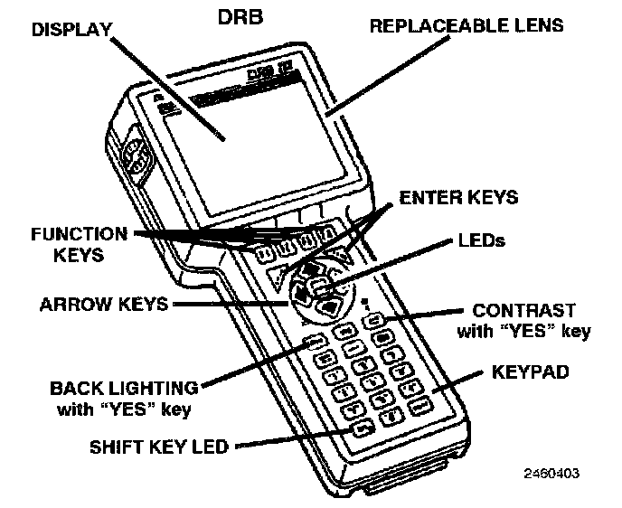

Scan Tool Testing and Procedures
DRB III ERROR MESSAGES AND BLANK SCREENUnder normal operation, the DRB III will display one of only two error messages:
User-Requested WARM Boot
User-Requested COLD Boot
If the DRB III should display any other error message, record the entire display and call the STAR Center. This is a sample of such an error message display:
ver: 2.14
date: 26 Jul93 file: key_itf.cc
date: Jul 26 1993 line: 548
err: Ox1
User-Requested COLD Boot
Press MORE to switch between this display and the application screen.
Press F4 when done noting information.
DRB III Does Not Power Up
If the LED's do not light or no sound is emitted at start up, check for loose cable connections or a bad cable. Check the vehicle battery voltage (data link connector cavity 16). A minimum of 11 volts is required to adequately power the DRB III.
If all connections are proper between the DRB III and the vehicle or other devices, and the vehicle battery is fully charged, and inoperative DRB III may be the result of faulty cable or vehicle wiring. For a blank screen, refer to the appropriate body diagnostics.

Display Is Not Visible
Low temperatures will affect the visibility of the display. Adjust the contrast to compensate for this condition.